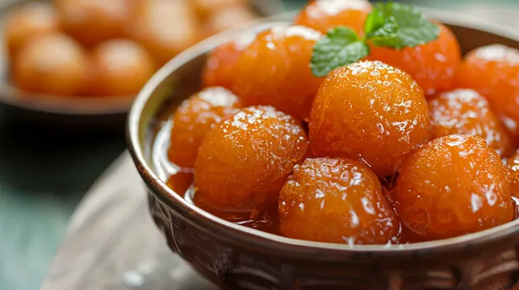

Gulab Jamun

Description
Gulab Jamun is a very popular Indian sweet made from deep fried balls of milk based dough that are soaked in sugary syrup. It is a favorite dessert of ours, and we often serve it for weddings, birthdays, festivals, parties or even as a post-prandial treat.
Ingredients
For The Jamun Dough:
- 1 cup Khoya or mawa - 200 grams
- ¾ cup grated paneer - 100 grams of paneer (Indian cottage cheese)
- 3 tablespoons all-purpose flour
- 2 tablespoons sooji (rava or semolina), finer variety
- 4 green cardamoms - powdered in a mortar-pestle or ½ teaspoon cardamom powder
- 1 tablespoon milk or add as required
- ¼ teaspoon baking powder
- oil for deep frying - as required
For Sugar Syrup
- 1.75 cups sugar - 250 grams
- 1 cup water
- 1 tablespoon rose water
- 1 tablespoon milk (optional) - read notes
Steps
-
Making Dough:
- Take khoya (mawa or evaporated milk) in a bowl. Mash it very well. There should be no lumps. You can also grate and then mash the khoya.
- Then add grated paneer, rava (sooji), all purpose flour (maida), baking powder and cardamom powder to the mashed khoya.
- There should be no lumps in both the mawa and paneer. As if they are there, then you will find the texture of the gulab jamun not so good.
- The bits and pieces of mava or paneer will give a bite in the mouth, when you have the gulab jamun. They won't be smooth.
- Mix well. Add milk and gather together to form a dough with milk. Don't knead.
- Just gently mix. If you are unable to form balls or if the mixture appears dry, then add a few teaspoons of milk. Cover the dough and keep aside for 30 mins.
- Make small balls from the dough. Cover the balls and keep aside.
-
Making Sugar Syrup
- Dissolve sugar in water. Heat the sugar solution till it become sticky. You just need to switch off the fire before the syrup reaches a one thread consistency.
- Add rose water and stir. Keep the sugar solution aside. On cooling if the sugar syrup crystallizes, then just add 2 to 3 tbsp water and warm the syrup again. It will again return to a liquid state.
-
Frying
- Meanwhile, while the sugar syrup is cooking, heat oil till its medium hot. Lower the flame and wait for a minute. Then gently place the dough balls in the oil.
- Once they start to have tiny golden spots, keep on rotating them in the oil, so that the jamun are evenly browned.
- Remove the fried jamun and then drain them on kitchen paper towels to remove excess oil.
-
Making Gulab Jamun
- Then place the hot fried dough balls in the sugar syrup. Continue frying the rest of the dough balls in batches.
- When all the jamuns are placed in the sugar syrup, then keep the whole pan with the sugar syrup and the gulab jamun, on a low heat for 1 to 2 minutes till the jamun become soft.
- Heating helps the gulab jamun to absorb the syrup and become soft. The jamun increase a bit in size. Don't overcook as then the jamun can break.
- Use a large pan, so that the jamuns are not overcrowded and you can easily stir them gently while they are simmering.
- Serve gulab jamun warm or at room temperature. You can also chill them and serve them cold. Garnish with rose petals or almond slivers.
Back to Home